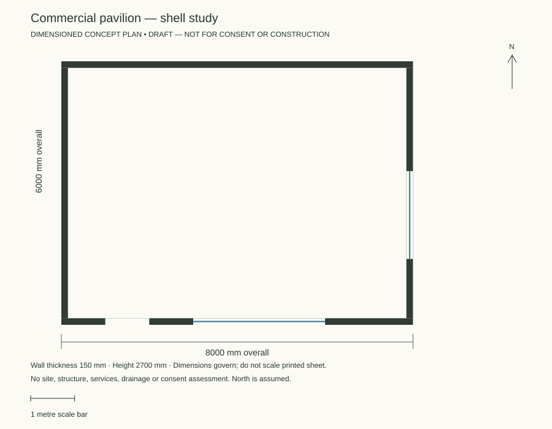

01 / Architecture experiments
From drawing
to model.
An early Assembl geometry study and export, alongside the tools you can try in the Lab today.
02 / Original Codex study
The pavilion
A synthetic 8 × 6 m pavilion, not a client project. This is an early proof that one model can produce a plan, a 3D file and a short walkthrough. It’s not a finished photoreal render or an engineering check.


Inspect the plan and model

03 / Explore the Lab
Try the interactive tools
Services in 3D
Explore proposed pipe, duct and cable routes. The software’s checks are advisory.
Walk the 16A model
Explore the house and see its construction sequence.